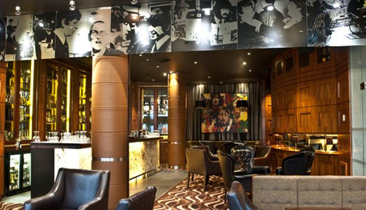
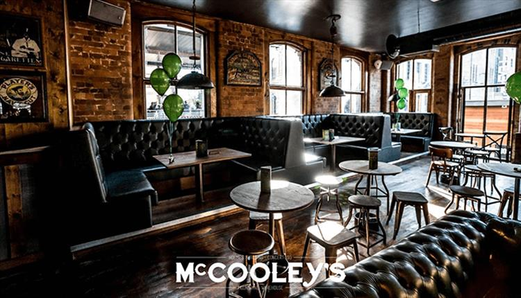
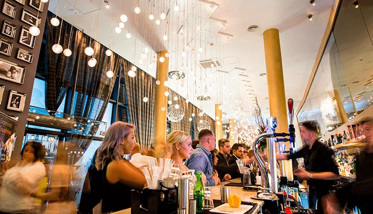

Liverpool is a city that is very proud of its nightlife, both due to the variety and quality on offer. From superclubs to pubs with dogs, a thriving gay quarter to comedy venues on the waterfront, dance warehouses to concept bars, Liverpool at night has many faces. Our suggestion for bars includes Palm Sugar Lounnge, McCooley's and Bar Four.